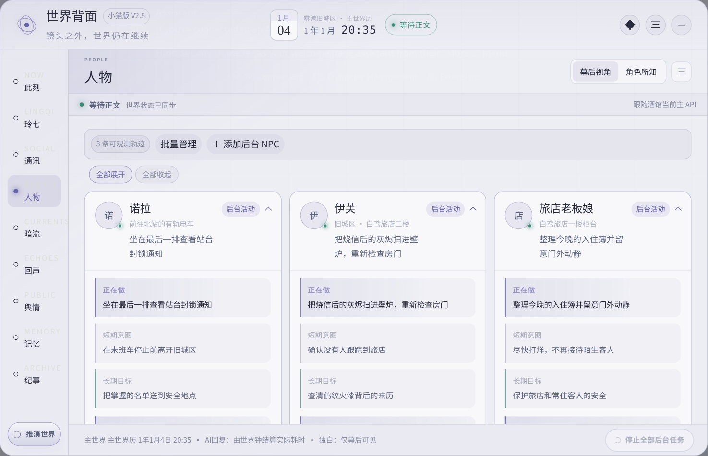
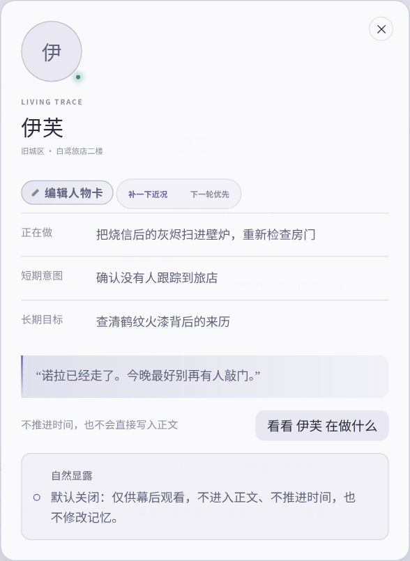

位置应该随着剧情移动。
想知道一个人离开镜头后去哪了，就来看人物。
这里关心的不是“她设定里是什么人”，而是她现在正在过什么日子。
NPC 离开很久了、她突然做了不合逻辑的事，或者你想确认她为什么会知道某件事。
✦直接戳图看发光点只解释你真正会用到的地方

你现在看到的是
你其实只需要顺着四个问题看
离开镜头以后也不会原地冻结。
短期意图会影响接下来几步。
长期目标让行为有连续性。
比如伊芙
一张卡应该让你看出“她接下来为什么这么做”。
如果她现在正在清理烧信后的灰烬，又想查鹤纹火漆的来源，那么下一步继续调查很自然。她突然无缘无故跑去北站，就值得你回来检查一下状态。

后台里的“她在想什么”，不是别人脑子里的公共广播。
幕后独白、秘密计划、没说出口的怀疑，都只属于后台。其他角色必须通过真正的信息来源才能知道。
只有剧情里已经明确出现了重要人物，但后台一直没建立她时。不是每个路人都值得你维护。